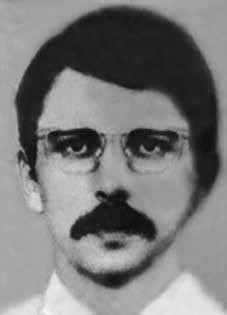

João
Carlos
Cavalcanti
Reis
CIRCUNSTÂNCIAS DA MORTE
João Carlos Cavalcanti Reis morreu no dia 30 de outubro de 1972, após ser ferido, por disparos de arma de fogo, em operação organizada por membros do Destacamento de Operações de Informações do Centro de Operações de Defesa Interna do II Exército (DOICODI/SP), no bairro de Vila Carrão, São Paulo.
Há indícios de que, após ser ferido, o militante tenha sido levado para o Departamento Estadual de Ordem Política e Social (DEOPS/SP), onde teria sofrido torturas e faleceu ainda no mesmo dia. A versão da morte divulgada na época afirmava que João Carlos teria morrido às 19h do dia 30 de outubro de 1972, após tiroteio com agentes dos órgãos de segurança no bairro Vila Carrão da capital paulista.
De acordo com o laudo de exame necroscópico, o militante vestia “cueca de nylon castanho, meias de algodão castanho”, faleceu em decorrência de lesões traumáticas crânioencefálicas causadas em função de projéteis de arma de fogo que o atingiram durante o tiroteio travado com agentes do DOI-CODI/SP. O laudo é assinado pelos médicos legistas Isaac Abramovitch e Orlando Brandão. Contudo, as investigações empreendidas pela CEMDP, pela Comissão de Familiares de Mortos e Desaparecidos Políticos, e pela CNV permitiram comprovar que a versão apresentada pelos órgãos da repressão paulista não se sustenta.
Segundo testemunho de José Trajano Paternostro Reis, irmão de João Carlos, apresentado por escrito à CEMDP em 19 de março de 1996, ele acredita que João Carlos foi morto após ser preso, ferido e torturado nas dependências do DEOPS/SP. José Trajano destacou que foram as autoridades do DEOPS que o convocaram junto com sua mãe e demais irmãos para comparecer às dependências do IML com a finalidade de reconhecer o corpo de João Carlos. Quando chegaram, foram detidos, pois os policiais do DEOPS que guardavam o corpo de João Carlos receberam ordens para prender quem ali comparecesse para reclamar o corpo da vítima, sem saberem que a família tinha sido convocada para tanto.
Posteriormente, foram libertados por ordem do próprio diretor do DEOPS/SP. Ainda de acordo com o testemunho de José Trajano, ele e seus familiares puderam reconhecer o corpo de João Carlos no IML, mas não foram autorizados a retirar o lençol que o cobria. Apesar da proibição, constataram que o rosto de João Carlos estava sem o olho esquerdo e a respectiva cavidade havia sido preenchida com algodão. Ao questionar a um funcionário do IML o que tinha ocorrido, obteve como resposta que a lesão tinha sido causada por “tarugo de madeira”.
A família percebeu que as mãos de João Carlos encontravam-se fechadas e contraídas, como se o militante tivesse sofrido fortes dores antes de falecer. José Trajano contou que o corpo do irmão foi entregue à família em caixão de zinco lacrado, proibido de ser aberto e com ordens expressas de jamais exumarem o corpo. Durante o enterro, um agente dos órgãos de segurança esteve presente para vigiar a cerimônia.
A versão apresentada pelos órgãos da repressão também é questionada pelo “Parecer Criminalístico” elaborado pelo perito criminal Celso Nenevê e apresentado à CEMDP em 24 de junho de 1996. Apesar do parecer afirmar ser impossível, diante da falta de elementos materiais, fornecer uma análise criminalística conclusiva, o documento ressaltou a existência de indícios que colocam em cheque a versão divulgada.
Em primeiro lugar, o perito apontou a não realização de levantamento pericial do local da morte e de posterior confecção de laudo de exame de local, conforme exigido pelo Código de Processo Penal vigente na época. Acrescentou que o laudo de exame necroscópico não descreveu todos os vestígios verificados e somente a conclusão de “ferimento produzido pela entrada de projétil de arma de fogo” impossibilita que se conheça a distância, a trajetória e as possíveis posições da vítima em relação ao(s) atirador(es). Ademais, destacou a “estranha vestimenta que a vítima apresentava para o horário e local do fato”, posto que não parece verossímil que João Carlos vestisse apenas “cueca de nylon castanha, meias de algodão castanho”, no meio de um tiroteio no bairro Vila Carrão às 19h, conforme registra o laudo de exame necroscópico.
O relator do caso da CEMDP, Nilmário Miranda, ressaltou que, apesar de João Carlos ter sido ferido em um tiroteio ocorrido por volta das 19h, conforme atestado pela certidão de óbito e pela requisição de exame cadavérico, seu corpo somente deu entrada no IML trajado de cueca e meias às 22h, três horas após a operação policial da qual foi alvo. A ausência de roupa é apontada por Nilmário como importante indício de que João Carlos fora levado à dependência policial para ser interrogado. O relator ainda destaca que a foto do cadáver evidencia marcas no pescoço da vítima que não são descritas no laudo cadavérico.
De acordo com Nilmário, a exumação do corpo de João Carlos seria desnecessária frente aos elementos conclusivos e apresentados no processo. A CEMDP buscou reconstruir, a partir de vários depoimentos, os momentos anteriores à morte de João Carlos. Segundo a referida comissão, João Carlos e Natanael de Moura Girardi haviam perdido contato com Antonio Benetazzo, também militante do Molipo, fazia dois dias. Para obter informações sobre Benetazzo, dirigiram-se à casa do militante Rubens Carlos Costa, que servia de aparelho da organização, onde Antonio havia sido preso dois dias antes.
Os agentes do DOI-CODI/SP, instalados em uma casa próxima do local, perceberam a movimentação e se organizaram para prender os militantes. Natanael conseguiu escapar do cerco, mas João Carlos foi ferido e preso. João Carlos Cavalcanti Reis foi enterrado no Cemitério Gethesêmani, em São Paulo.
João Carlos Cavalcanti Reis died on October 30, 1972, after being injured by gunfire, in an operation organized by members of the Information Operations Detachment of the II Army's Internal Defense Operations Center (DOICODI/SP), in the neighborhood of Vila Carrão, São Paulo.
There are indications that, after being injured, the militant was taken to the State Department of Political and Social Order (DEOPS/SP), where he suffered torture and died on the same day. The version of death published at the time stated that João Carlos had died at 7 pm on October 30, 1972, after a shootout with security agents in the Vila Carrão neighborhood of the capital of São Paulo.
According to the autopsy report, the militant was wearing “brown nylon underwear, brown cotton socks”, and died as a result of traumatic brain injuries caused by firearm projectiles that hit him during the shootout with DOI-CODI/SP agents. The report is signed by coroners Isaac Abramovitch and Orlando Brandão. However, the investigations carried out by CEMDP, the Commission for Relatives of the Political Dead and Missing, and the CNV made it possible to prove that the version presented by the São Paulo repression bodies is not sustainable.
According to the testimony of José Trajano Paternostro Reis, brother of João Carlos, presented in writing to CEMDP on March 19, 1996, he believes that João Carlos was killed after being arrested, injured and tortured on the premises of DEOPS/SP. José Trajano highlighted that it was the DEOPS authorities who summoned him along with his mother and other siblings to appear at the IML premises in order to recognize João Carlos' body. When they arrived, they were detained, as the DEOPS police officers guarding João Carlos' body were ordered to arrest anyone who came there to claim the victim's body, without knowing that the family had been summoned to do so.
They were later released by order of the director of DEOPS/SP himself. Still according to José Trajano's testimony, he and his family were able to recognize João Carlos' body at the IML, but were not authorized to remove the sheet that covered him. Despite the prohibition, they found that João Carlos' face was missing his left eye and the respective cavity had been filled with cotton. When he asked an IML employee what had happened, he received the answer that the injury had been caused by a “wooden billet”.
The family noticed that João Carlos' hands were closed and contracted, as if the activist had suffered severe pain before passing away. José Trajano said that his brother's body was handed over to the family in a sealed zinc coffin, prohibited from being opened and with express orders never to exhume the body. During the burial, an agent from the security agencies was present to monitor the ceremony.
The version presented by the repression bodies is also questioned by the “Criminal Opinion” prepared by criminal expert Celso Nenevê and presented to CEMDP on June 24, 1996. Despite the opinion stating that it is impossible, given the lack of material elements, to provide a conclusive criminal analysis, the document highlighted the existence of evidence that calls into question the published version.
Firstly, the expert pointed out the failure to carry out an expert survey of the place of death and subsequent preparation of a site examination report, as required by the Code of Criminal Procedure in force at the time. He added that the necroscopic examination report did not describe all the traces found and only the conclusion of “injury caused by the entry of a firearm projectile” makes it impossible to know the distance, trajectory and possible positions of the victim in relation to the shooter(s). Furthermore, he highlighted the “strange clothing that the victim presented for the time and place of the incident”, since it does not seem credible that João Carlos was only wearing “brown nylon underwear, brown cotton socks”, in the middle of a shootout in the Vila Carrão neighborhood at 7pm, as recorded in the autopsy report.
The CEMDP case rapporteur, Nilmário Miranda, highlighted that, although João Carlos was injured in a shooting that occurred around 7pm, as certified by the death certificate and the request for a cadaveric examination, his body was only admitted to the IML dressed in underwear and socks at 10pm, three hours after the police operation of which he was the target. The absence of clothing is pointed out by Nilmário as an important indication that João Carlos was taken to the police station to be interrogated. The rapporteur also highlights that the photo of the corpse shows marks on the victim's neck that are not described in the cadaveric report.
According to Nilmário, the exhumation of João Carlos' body would be unnecessary given the conclusive elements presented in the process. CEMDP sought to reconstruct, based on various testimonies, the moments before João Carlos' death. According to the aforementioned commission, João Carlos and Natanael de Moura Girardi had lost contact with Antonio Benetazzo, also a Molipo activist, two days ago. To obtain information about Benetazzo, they went to the house of militant Rubens Carlos Costa, which served as the organization's apparatus, where Antonio had been arrested two days earlier.
DOI-CODI/SP agents, installed in a house close to the site, noticed the movement and organized themselves to arrest the militants. Nathanael managed to escape the siege, but João Carlos was injured and arrested. João Carlos Cavalcanti Reis was buried in the Gethsêmani Cemetery, in São Paulo.
João Carlos Cavalcanti Reis murió el 30 de octubre de 1972, tras ser herido por arma de fuego, en un operativo organizado por miembros del Destacamento de Operaciones de Información del Centro de Operaciones de Defensa Interna del II Ejército (DOICODI/SP), en el barrio de Vila Carrão, São Paulo.
Hay indicios de que, tras resultar herido, el militante fue trasladado al Departamento Estatal de Orden Político y Social (DEOPS/SP), donde sufrió torturas y murió el mismo día. La versión de muerte publicada en ese momento afirmaba que João Carlos había muerto a las 19 horas del 30 de octubre de 1972, tras un tiroteo con agentes de seguridad en el barrio de Vila Carrão de la capital de São Paulo.
Según el informe de la autopsia, el militante vestía “ropa interior de nailon marrón, calcetines de algodón marrón” y murió como consecuencia de lesiones cerebrales traumáticas provocadas por proyectiles de arma de fuego que lo alcanzaron durante el tiroteo con agentes del DOI-CODI/SP. El informe está firmado por los forenses Isaac Abramovitch y Orlando Brandão. Sin embargo, las investigaciones realizadas por el CEMDP, la Comisión de Familiares de Muertos y Desaparecidos Políticos y la CNV permitieron comprobar que la versión presentada por los órganos de represión paulistas no es sostenible.
Según el testimonio de José Trajano Paternostro Reis, hermano de João Carlos, presentado por escrito al CEMDP el 19 de marzo de 1996, cree que João Carlos fue asesinado después de haber sido detenido, herido y torturado en las instalaciones del DEOPS/SP. José Trajano destacó que fueron las autoridades del DEOPS quienes lo citaron junto a su madre y otros hermanos a presentarse en las instalaciones del IML para reconocer el cuerpo de João Carlos. Cuando llegaron, fueron detenidos, ya que los policías del DEOPS que custodiaban el cuerpo de João Carlos recibieron la orden de detener a todo aquel que acudiera a reclamar el cuerpo de la víctima, sin saber que la familia había sido citada para ello.
Posteriormente fueron puestos en libertad por orden del propio director del DEOPS/SP. Aún según el testimonio de José Trajano, él y su familia pudieron reconocer el cuerpo de João Carlos en el IML, pero no fueron autorizados a retirar la sábana que lo cubría. A pesar de la prohibición, encontraron que al rostro de João Carlos le faltaba el ojo izquierdo y la cavidad respectiva había sido rellenada con algodón. Cuando preguntó a un empleado de IML qué había sucedido, recibió la respuesta que la lesión había sido causada por un “tocho de madera”.
La familia notó que las manos de João Carlos estaban cerradas y contraídas, como si el activista hubiera sufrido fuertes dolores antes de fallecer. José Trajano dijo que el cuerpo de su hermano fue entregado a la familia en un ataúd de zinc sellado, con prohibición de apertura y con órdenes expresas de nunca exhumar el cuerpo. Durante el entierro estuvo presente un agente de los organismos de seguridad para supervisar la ceremonia.
La versión presentada por los órganos de represión también es cuestionada por el “Dictamen Penal” elaborado por el perito penal Celso Nenevê y presentado al CEMDP el 24 de junio de 1996. A pesar de que el dictamen afirma que es imposible, dada la falta de elementos materiales, proporcionar un análisis criminal concluyente, el documento destacó la existencia de pruebas que cuestionan la versión publicada.
En primer lugar, el perito señaló la falta de realización de un peritaje del lugar de la muerte y posterior elaboración de un informe de inspección del lugar, como lo exige el Código de Procedimiento Penal vigente en ese momento. Agregó que el informe del examen necroscópico no describe todas las huellas encontradas y sólo la conclusión de “lesión causada por el ingreso de un proyectil de arma de fuego” imposibilita conocer la distancia, trayectoria y posibles posiciones de la víctima en relación con el tirador. Además, destacó la “indumentaria extraña que presentaba la víctima para el momento y lugar del hecho”, ya que no parece creíble que João Carlos solo llevara “ropa interior de nailon marrón, calcetines de algodón marrón”, en medio de un tiroteo en el barrio de Vila Carrão a las 19.00 horas, según consta en el informe de la autopsia.
El relator del caso del CEMDP, Nilmário Miranda, destacó que, si bien João Carlos resultó herido en un tiroteo ocurrido alrededor de las 19 horas, como lo certifica el certificado de defunción y la solicitud de examen cadavérico, su cuerpo fue ingresado en el IML vestido con ropa interior y medias recién a las 22 horas, tres horas después del operativo policial del que fue objeto. Nilmário señala la ausencia de ropa como un indicio importante de que João Carlos fue llevado a la comisaría para ser interrogado. El relator también destaca que la foto del cadáver muestra marcas en el cuello de la víctima que no están descritas en el informe cadavérico.
Según Nilmário, la exhumación del cuerpo de João Carlos sería innecesaria dados los elementos concluyentes presentados en el proceso. El CEMDP buscó reconstruir, a partir de diversos testimonios, los momentos previos a la muerte de João Carlos. Según la citada comisión, João Carlos y Natanael de Moura Girardi habrían perdido contacto con Antonio Benetazzo, también militante de Molipo, hace dos días. Para obtener información sobre Benetazzo acudieron a la casa del militante Rubens Carlos Costa, que hacía las veces de aparato de la organización, donde Antonio había sido detenido dos días antes.
Agentes del DOI-CODI/SP, instalados en una casa cercana al lugar, advirtieron el movimiento y se organizaron para detener a los militantes. Natanael logró escapar del asedio, pero João Carlos resultó herido y arrestado. João Carlos Cavalcanti Reis fue enterrado en el cementerio Getsemaní, en São Paulo.